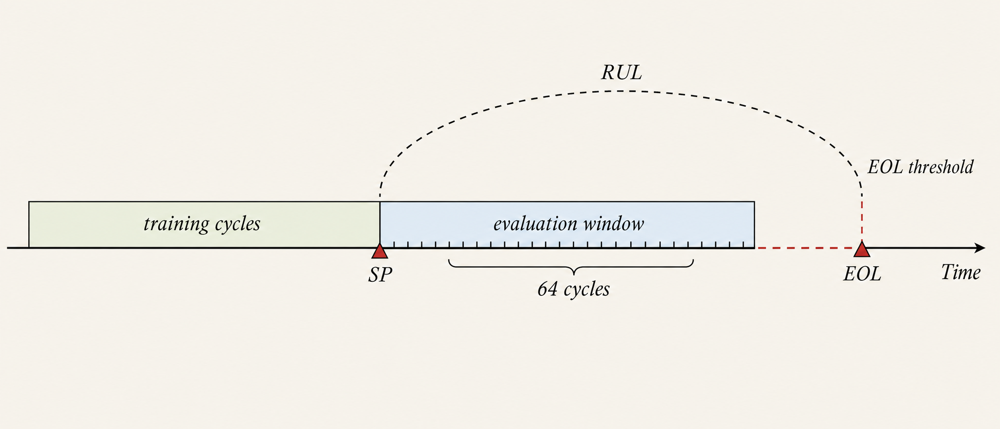
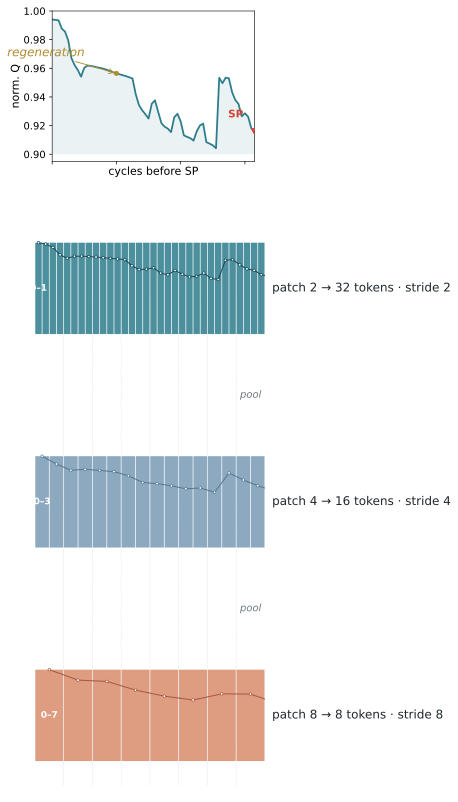
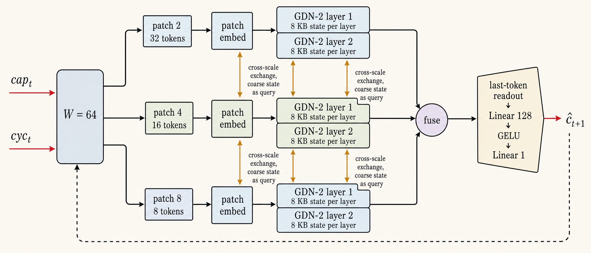
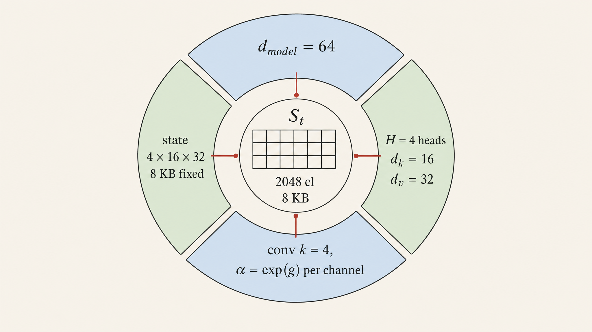
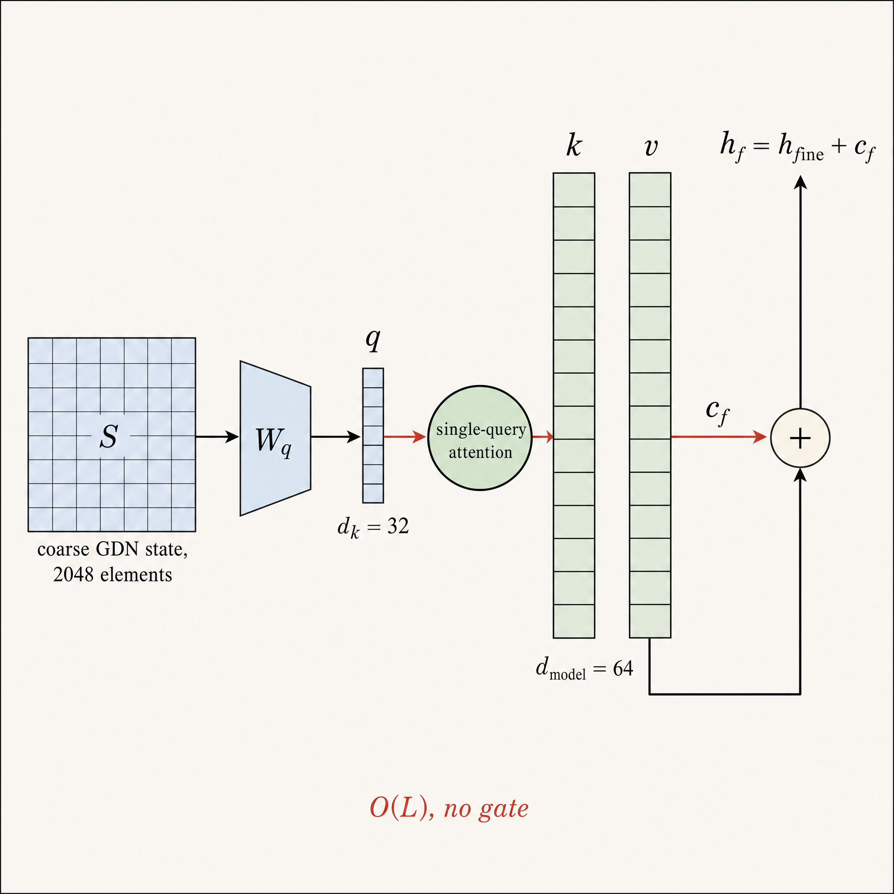
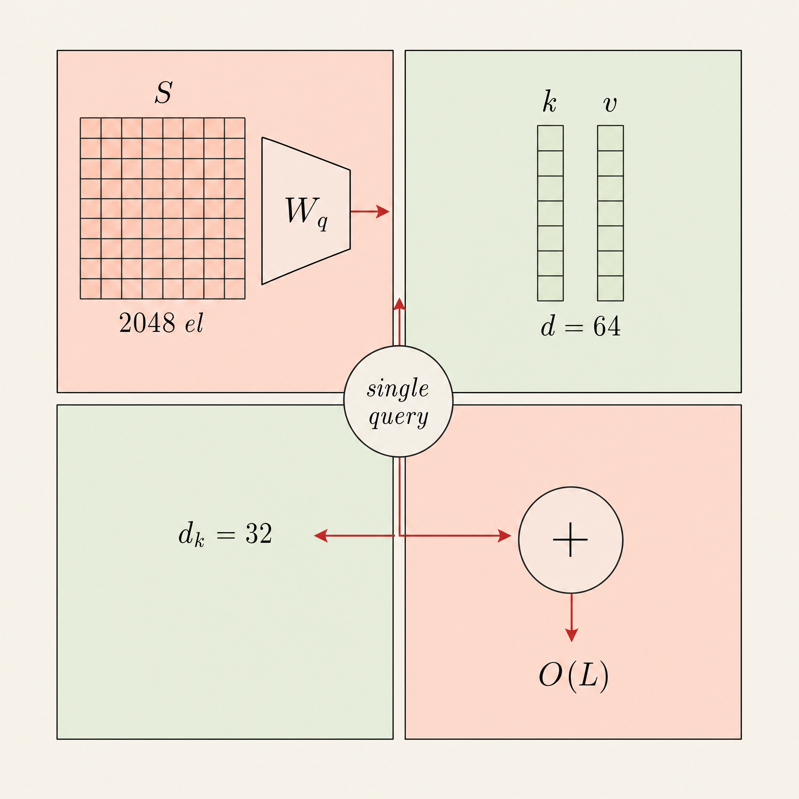

FROM WINDOW TO TOKENS


MULTI-SCALE GDN-2 ENCODER · THREE BRANCHES · TWO LAYERS EACH


STAGE-QUERY CROSS-SCALE EXCHANGE · PER LAYER

coarse state S → single query → sweeps fine k/v · O(L) · additive
cf = Attn(q, K, V) · hf ← hf + cf
